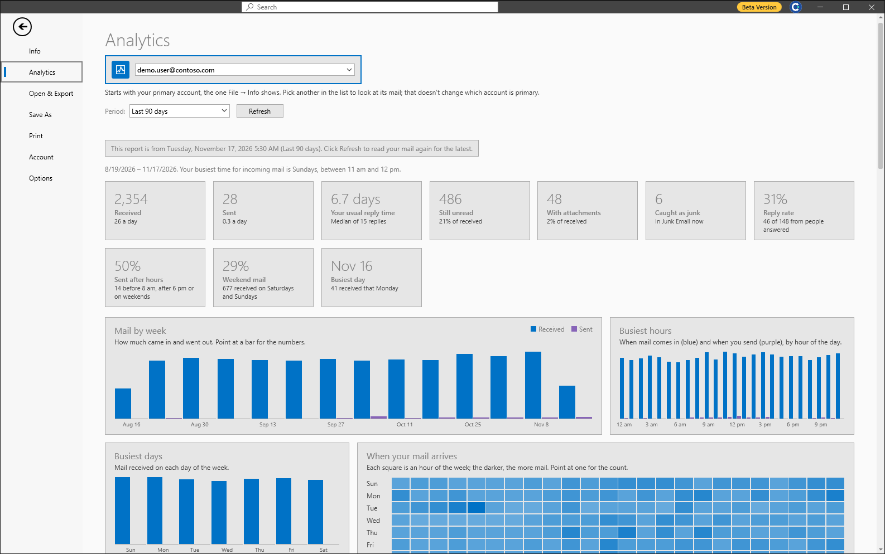
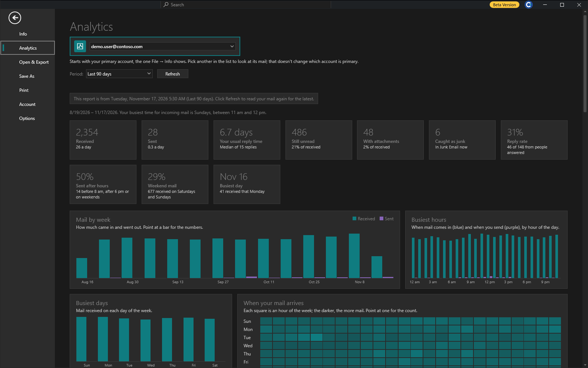
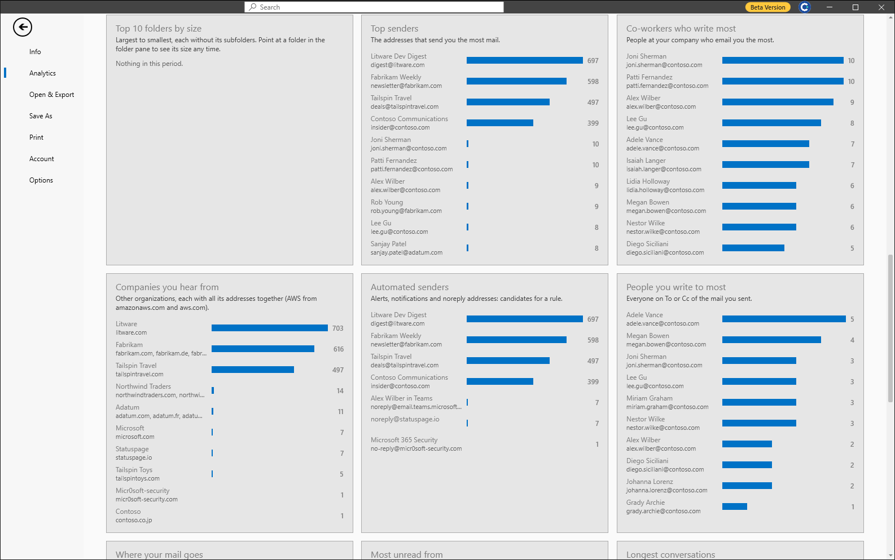
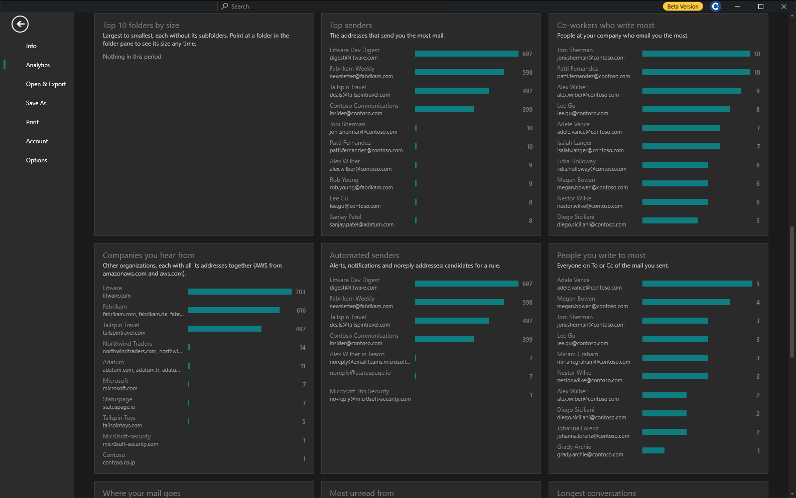

- File → Analytics for any of your accounts, over the last 30 days, 90 days, 12 months or all your mail.
- The figures: mail received and sent, your usual reply time and reply rate, what’s still unread, mail sent after hours and on weekends, and your busiest day.
- Charts of mail over time, your busiest hours and days, a grid of when mail arrives each hour of the week, and pies of who it’s from.




- Top 10s: senders, the co-workers who write most, companies (with all their addresses together), automated senders, the people and domains you write to, who you leave unread, the longest conversations, who you answer fastest and slowest, and your folders by size.




- Folder sizes: point at a folder to see its items, unread and size.
- Private: only who each message is from and to, and when, are read, never what it says, and it’s all worked out on your PC.
Missing something you used in Outlook? Choose Help → Suggest a Feature in the app. Found a bug? Choose Help → Report a Bug.